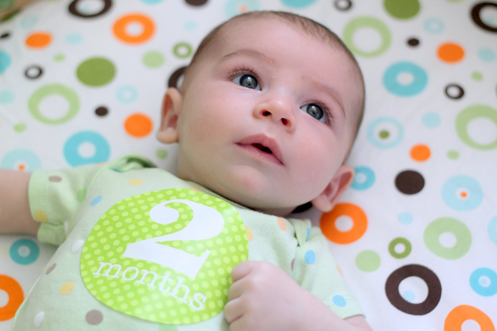

Двухмесячный малыш - очень общительный и подвижный: он улыбается маме, сообщает о своем состоянии разнообразными звуками и вовсю машет ручками и ножками, иногда попадая по подвешенной игрушке.
В 2 месяца ребенок уже дальше видит, чем новорожденный, - на 2-3 метра, и учится фиксировать взгляд на самом интересном предмете - лице матери. Сначала малыш и взрослый устанавливают зрительный контакт, вскоре 2-месячный малыш одарит вас улыбкой. Развитие ребенка в 2 месяца в большей степени эмоциональное, нежели физическое. Малыш пытается подчинить себе руки и ноги, но двигаются они по большей части хаотично.